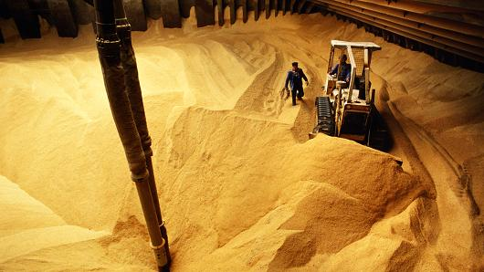
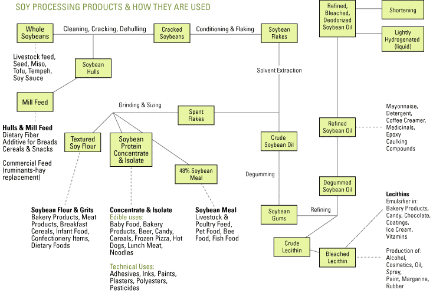

A large majority of soybeans, about 85%, undergo the process of crushing, which produces soybean meal and soybean oil. Soybean meal is a vital feed in modern animal husbandry, while soybean oil is one of the most prevalent vegetable oils used for cooking and in processed foods. The separation process involves heating, mechanical crushing, and solvent extraction of oils. While the oil content of the beans varies based on growing conditions, each bushel of soybeans produces about 11 to 12 pounds of oil, 44 pounds of meal, and 3 to 4 pounds of hulls. The processing of soybeans can be viewed as a profitable industry in its own right, with firms dedicated to processing raw soybeans into its components. The difference in the price of a bushel of soybeans and the processed products resulting from that bushel varies year to year, but as of 2011 has typically been between 50 cents and $1.50. The margins on this processing hover around 7-10%.
Since 1960, demand for both soybean meal and soybean oil has increased substantially. Soybean meal is a nutritionally dense feed for animals, and a particularly good source of protein. Furthermore, the protein in soybean meal has relatively high bioavailability, and its lysine content (an essential, limiting amino acid for animal growth) allows for formulation of diets lower in total protein. As a result of its many benefits, soybean meal accounts for approximately two thirds of protein-based animal feed. The drastic rise in prevalence of soybean meal as an animal feed began first in the 1970s, and spiked once again in the 1990s. And as industrialized livestock operations have become a larger part of the meat industry over the years, so too has the importance of soybean meal. Nowadays, China is the largest importer of soybeans, as its explosive growth and burgeoning middle class have driven the rise of by far the largest meat industry in the world. And despite a sizable domestic soybean industry in China, it still relies heavily on imports from other producers, including the United States. This, of course, has been a major factor behind the increases in production here in the US.

